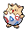
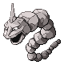
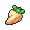
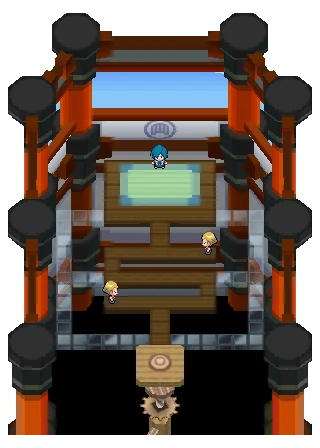

攻略大全 / 心金 / 魂银（详细图文） / 地图总览
31号道路、桔梗市、喇叭芽之塔、桔梗道馆
主线
31号道路

31号道路是一条短而弯曲的小路，连接30号道路和西边的桔梗市。道路东侧有个洞口通往黑暗洞穴，但没有特定的野外招式很难在里面行动。
| 训练家 | 宝可梦 | 奖金 |
|---|---|---|
| 捕虫少年 Wade | ₽32 |
| 宝可梦 | 版本 | 方式 | 等级 | 出现率 |
|---|---|---|---|---|
| 心金 | 草丛 | Lv.4-5 | 早 35% · 日 35% · 夜 0% | |
| 心金 | 草丛 | Lv.5 | 早 15% · 日 15% · 夜 0% | |
| 魂银 | 草丛 | Lv.4 | 早 30% · 日 0% · 夜 0% | |
| 魂银 | 草丛 | Lv.4-5 | 早 0% · 日 35% · 夜 0% | |
| 魂银 | 草丛 | Lv.5 | 早 10% · 日 15% · 夜 0% | |
| 心金 | 草丛 | Lv.3 | 早 30% · 日 30% · 夜 0% | |
| 魂银 | 草丛 | Lv.5 | 早 10% · 日 0% · 夜 0% | |
| 魂银 | 草丛 | Lv.4 | 早 0% · 日 30% · 夜 0% | |
| 心金 / 魂银 | 草丛 | Lv.4-5 | 早 0% · 日 0% · 夜 40% | |
| 心金 / 魂银 | 草丛 | Lv.3 | 20% | |
| 心金 | 草丛 | Lv.5 | 早 0% · 日 0% · 夜 10% | |
| 魂银 | 草丛 | Lv.4-5 | 早 0% · 日 0% · 夜 40% | |
| 魂银 | 草丛 | Lv.4 | 早 30% · 日 0% · 夜 0% | |
| 心金 | 草丛 | Lv.3 | 早 0% · 日 0% · 夜 30% |
| 道具 | 版本 | 位置 / 获得方法 |
|---|---|---|
| 心金 / 魂银 | 黑暗洞穴外的告示牌附近 | |
| 心金 / 魂银 | 池塘西南边的树上（每天一次） | |
| 心金 / 魂银 | 池塘和台阶的南边 | |
| 心金 / 魂银 | 关口里，琴音/响给予 | |
| 之后再来 | ||
| 招式学习器44（睡觉） | 心金 / 魂银 | 把35号道路上朋友的烈雀送到之后，由池塘边的男人给予 |
熟悉的面孔
你走进关口时，琴音/响追了上来，纳闷你是怎么抢先一步的。对方送你一个对战记录器，可以录下宝可梦对战并分享给朋友，然后先去了桔梗市。
↓ 下一站：桔梗市
桔梗市

桔梗市是一座被树木环绕的古老城镇，东边是31号道路，南边是32号道路，西边是36号道路。这里有宝可梦学校和桔梗道馆，是新手训练家常来的地方。小镇北边耸立着一座叫喇叭芽之塔的高塔。
| 宝可梦 | 版本 | 方式 | 等级 | 出现率 |
|---|---|---|---|---|
| 赠送的宝可梦 | ||||
 波克比 | 心金 / 魂银 | 蛋 | Lv.1 | 1 只（拿到天空徽章后由空木博士的助手给的蛋，会神通力） |
| 心金 / 魂银 | 蛋 | Lv.1 | 1 只（Primo 给的蛋，需要输入专属密码） | |
| 心金 / 魂银 | 蛋 | Lv.1 | 1 只（Primo 给的蛋，需要输入专属密码） | |
| 心金 / 魂银 | 蛋 | Lv.1 | 1 只（Primo 给的蛋，需要输入专属密码） | |
| 特殊 | ||||
 大岩蛇 | 心金 / 魂银 | 交换 | 与换出去的宝可梦同等级 | 1 只 |
| 道具 | 版本 | 位置 / 获得方法 |
|---|---|---|
 柿仔果 | 心金 / 魂银 | 交换得到的大岩蛇 Rocky 携带 |
| 心金 / 魂银 | 南边出口附近空地上的树上（每天一次） | |
| 心金 / 魂银 | 喇叭芽之塔前那座灰色小岛的西侧（隐藏道具） | |
| 招式学习器51（羽栖） | 心金 / 魂银 | 打败道馆馆主阿速后由他给予 |
| 之后再来 | ||
| 心金 / 魂银 | 宝可梦中心后面小路的尽头（隐藏道具，需要碎岩） | |
| 心金 / 魂银 | 东边湖对面的空地上（需要冲浪） | |
| 心金 / 魂银 | 西边湖对面的空地上（需要冲浪） | |
交换树果的人
宝可梦中心门前站着一个杂技人。你用碎片可以跟他换三种不同的树果，换到哪种取决于碎片的颜色。
| 碎片 | 树果组合 | 树果 | ||||||
|---|---|---|---|---|---|---|---|---|
| 红色碎片 | A | 樱子果 | 桃桃果 | 苹野果 | ||||
| 蓝色碎片 | B | 橙橙果 | 零余果 | 异奇果 | ||||
| 黄色碎片 | C | 利木果 | 文柚果 | 芭亚果 | ||||
| 绿色碎片 | D | 莓莓果 | 木子果 | 乐芭果 | ||||
宝可梦中心
去宝可梦中心，和电脑旁边的男人说话。他自我介绍叫 Primo，是电视节目《Show Me Show!》的主持人。他算是个小名人，会问你对他的看法。选出正确的词语组合，就能解锁电脑壁纸或拿到宝可梦蛋。一共有八种壁纸和三种蛋：咩利羊、乌波和熔岩虫。
交换宝可梦
宝可梦中心西南边的房子里有个男孩想交换宝可梦。他愿意用自己的大岩蛇换一只喇叭芽。31号道路和32号道路附近就能抓到喇叭芽。
Earl 的宝可梦学校
本地的宝可梦学校由一个叫 Earl 的男人经营，一开始他站在道馆和友好商店之间。和他说话，他会问你有没有打败本地道馆；回答没有，他就会一路转着圈把你带到学校。学校给经验不足的训练家讲解对战的基础知识。教室前面的黑板写着五种会影响宝可梦的异常状态：
| 异常状态 | 效果 | |
|---|---|---|
| 灼伤 | 灼伤 | 物理招式造成的伤害降到 50%；每回合损失最大 HP 的 1/8。火属性宝可梦不会灼伤。 |
| 冰冻 | 冰冻 | 解冻前无法行动（每回合有 20% 概率解冻）。冰属性宝可梦不会冰冻。 |
| 麻痹 | 麻痹 | 速度降到 25%；有 1/4 的概率无法攻击。地面属性宝可梦不会被电属性招式麻痹。 |
| 中毒 | 中毒 | 每回合损失最大 HP 的 1/8；在战斗外每走四步损失 1 HP。毒属性和钢属性宝可梦不会中毒。 |
| 睡眠 | 睡眠 | 一到四回合无法行动。 |
喇叭芽之塔


喇叭芽之塔是一座大宝塔，靠一根左右摇摆的柔韧柱子支撑。这种柔韧性让塔不怕地震，也象征着塔上层进行的对战。塔里住着潜心修行的和尚，他们教导说一切生命都靠合作共存。据说那根摇摆的柱子原本是一只 30 多米高的喇叭芽。
| 训练家 | 宝可梦 | 奖金 |
|---|---|---|
| 和尚 Nico | ₽144 | |
| 和尚 Chow | ₽144 | |
| 和尚 Edmond | ₽144 | |
| 和尚 Jin | ₽288 | |
| 和尚 Neal | ₽288 | |
| 和尚 Troy | ₽336 |
| 宝可梦 | 版本 | 方式 | 等级 | 出现率 |
|---|---|---|---|---|
| 1F-3F | ||||
| 心金 / 魂银 | 2F-3F | Lv.3-6 | 早 100% · 日 100% · 夜 0% | |
| 心金 / 魂银 | 2F-3F | Lv.3, 5 | 早 0% · 日 0% · 夜 15% | |
| 心金 / 魂银 | 2F-3F | Lv.3-6 | 早 0% · 日 0% · 夜 85% | |
| 道具 | 版本 | 位置 / 获得方法 |
|---|---|---|
| 1F | ||
| 心金 / 魂银 | 北侧，东北楼梯的南边 | |
| 2F | ||
| 心金 / 魂银 | 西南侧，西边楼梯的北边 | |
| 3F | ||
| 心金 / 魂银 | 楼梯西边 | |
| 心金 / 魂银 | 柱子东北边 | |
| 招式学习器70（闪光） | 心金 / 魂银 | 打败长老阿李后由他给予 |
1F（中央）
塔有三层。一楼对游客开放，人们来这里参观这座塔独特的建造风格。经过摇摆的柱子，爬楼梯上 2F。
2F（东北）
往东走和和尚 Nico 对战，然后走楼梯回到 1F。
1F（北侧）
拿南边的解麻药。往西走和和尚 Chow 对战，然后爬上西边的楼梯。
2F（西南）
拿北边的命中强化，然后在西南角和和尚 Edmond 对战。爬南边的楼梯上 3F。
3F
拿西边的伤药。继续往北，和和尚 Jin、Neal、Troy 对战。
经过摇摆的柱子时，你会看到劲敌（西尔弗）刚刚打败了长老阿李。长老认可西尔弗作为训练家的实力，给了他一个招式学习器，但告诫他不要那样粗暴地对待宝可梦。这时西尔弗注意到了你，抱怨这位长老太弱。他显然没打算听长老的话，他只在乎能赢的强大宝可梦。说完他用离洞绳离开了塔。
拿东北角的离洞绳，然后和长老阿李说话。他欢迎你来到塔里，提出要考验你和宝可梦之间的羁绊。
对战长老阿李
阿李的两只喇叭芽是草属性，怕火属性和飞行属性的攻击，所以波波、咕咕和火球鼠都能轻松打倒它们。他的咕咕是飞行属性，被岩石属性的攻击打会受很大伤害。
| 宝可梦 | 详情 |
|---|---|
Lv.7 · 草 / 毒 | 特性：叶绿素 招式：藤鞭、生长 |
Lv.7 · 草 / 毒 | 特性：叶绿素 招式：藤鞭、生长 |
Lv.10 · 一般 / 飞行 | 特性：不眠 招式：叫声、催眠术、啄 |
对战结束后，阿李会奖励你招式学习器70（闪光）。这个野外招式能照亮最黑暗的洞窟，但要在战斗外使用，得先打败桔梗道馆。
桔梗道馆

| 桔梗市宝可梦道馆 馆主：阿速 优雅的飞行宝可梦高手 |
桔梗道馆专精飞行属性宝可梦。飞行属性招式对虫、格斗、草属性效果绝佳，而飞行属性宝可梦怕电、冰、岩石属性的招式。
道馆一楼空荡荡的，只有一个木制平台会把挑战者送到上层。高台上有两名道馆训练家，不过有一条半透明的走道可以直接走到馆主面前。
阿速的比比鸟会用起风，能对虫属性和菊草叶这样的草属性宝可梦造成很大伤害。它不算最难打倒，但会用羽栖回复体力，比较耐打。飞行属性宝可梦对岩石属性的高防御几乎没办法；如果你跟那个男孩换了大岩蛇，用落石反击就能轻松获胜。
| 训练家 | 宝可梦 | 奖金 |
|---|---|---|
| 养鸟人 Abe | ₽288 | |
| 养鸟人 Rod | ₽224 |
| 宝可梦 | 详情 |
|---|---|
Lv.9 · 一般 / 飞行 | 特性：锐利目光 招式：撞击、泼沙 |
Lv.13 · 一般 / 飞行 | 特性：锐利目光 招式：撞击、羽栖、起风 |
对战结束后，阿速会授予你天空徽章：20 级以下的宝可梦都会听你的话，并且能在野外使用碎岩。他还会送你招式学习器51（羽栖）作为奖励。
空木博士和蛋
你一走出道馆，空木博士就打来电话，说他们发现了关于神奇蛋的一些事。他没细说，但希望你带着这颗蛋一起旅行。他告诉你他的助手就在附近的友好商店，请你去找他。
友好商店
空木博士的助手在柜台旁等你。答应博士的请求，他就把神奇蛋还给你。原来你离开研究所后，博士接到一通电话，很快就认定没有人比你更适合照顾这颗蛋。助手解释说，宝可梦要从蛋里成长、孵化，必须和其他活动中的宝可梦待在一起。说完他就回研究所了。
神秘的女孩
你走出友好商店时，遇到一位穿着和服的神秘女孩。她注意到了神奇蛋，看出它是从宝可梦爷爷那里传给空木博士、再传到你手上的。她说这是一颗重要的蛋，拜托你替她好好照顾，然后往南离开了。
↓ 下一页：32号道路、阿露福遗迹、相连洞穴、33号道路
原文：Bulbapedia《Walkthrough:Pokémon HeartGold and SoulSilver/Part 3》（修订版本 4486811，），作者见原文页面历史。本页由 Eli 的杂货间翻译为中文，并有改动（重新排版、精简部分图注）。原文与译文均以 CC BY-NC-SA 2.5 授权。配图来自原站，版权归原作者与游戏厂商；地图截图来自 Bulbagarden Archives，游戏画面版权归 Nintendo / Game Freak / The Pokémon Company。